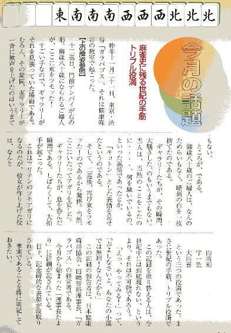

（139）トリプル役満
|
ダブル役満くらいなら、いくらでもある。σ(-_-)１人に限っても、２回は経験している。トリプル役満となればさすがに珍しい。もちろん膨大なゲームを誇るネット麻雀の世界では、数は少ないまでも何回も記録されている。しかしリアルとなると、風の便りというか、ウワサに聞くことはあっても、確証も何も無い話でしかない。
'05.1月号の麻雀四季報に、そんな珍しいトリプル役満の発生が掲載されている。リアルで、おまけにこのアガリ方となると、間違いなく空前絶後。
世の中いろいろあるので、記事抜粋と思ったが、どこを削っても迫力が薄れる。あんまりすごいので、そのまま紹介。なお事件？が起きた雀荘ガラパゴスは、「賭けない」「吸わない」「飲まない」の健康雀荘。もちろん、当サイトのノーレート雀荘カテゴリーにも収録させていただいている。

|
ロッキー堀江 投稿日：2005/02/24(Thu)
SPロッキーでは平成8年７月27日に字一色、小四喜、四暗刻単騎待ちというアガりが出ています。たしか数のような牌姿でした。
東東東南南南西北北北白白白 ロン西
残念なことにそのアガりが出たとき私は現場にいなかったのですが、同卓した人の話によれば「妙に字牌が出ていない場だったなあ」とのことでした。
上がったのは当時学生だったAくん。振り込んでしまったのは攻撃型の打ち手Sさんでした。
珍しいことだとは思いましたが、わざわざコラムに書かれるようなことだったとは・・・
SPロッキーでの役満に関する珍しいこととしては、同一人物が半荘で３回四暗刻を和了するということもありました。こちらは平成８年10月20日のことでした。わたしが竹書房最強戦で審判長をした日、その手伝いで会場に来てくれたYくんが帰りにお店によって打ったときの事でした。
そのYくん、半荘1回打ったところで、「気持ち悪いです」といって帰ってしまいました。確かに半荘に３回も四暗刻をアガれば気持ち悪くもなるかもしれません。
|
あさみ 投稿日：2005/02/26(Sat)
こんにちわ、ロッキーさん。
おお、SPロッキー店でもあったんですか。ひょっとするとトリプル役満はノーレートのお店に縁があるアガリなのかな。
>わざわざコラムに書かれるようなことだったとは・・・
もちろんトリプル役満だけでも珍しいのですが、なにせ麻雀四季報でのアガリは、四暗刻＋字一色＋小四喜を拒否して四暗刻＋字一色＋大四喜にしたもの。さすがにこれは空前絶後かと。（^-^；
同一人物が半荘で３回四暗刻というのも珍しいですね。同卓していたら、「イカサマだあ！」と叫ぶかもしれません。（^-^；
|